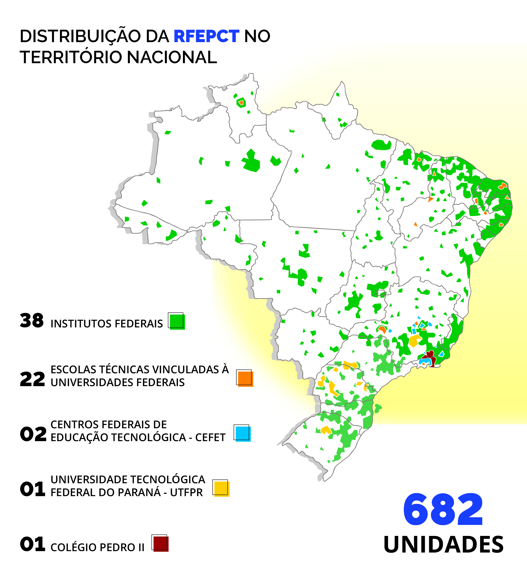

Direito à educação e o projeto de EPT em um país marcado pela desigualdade
O Brasil é um país fortemente afetado por desigualdades sociais, econômicas e regionais, que produzem efeitos significativos no acesso à educação, sobretudo à educação de qualidade. Nesse cenário, a EPT surge como uma alternativa para lidar com essas questões, favorecendo a inclusão social, o desenvolvimento humano integral e a formação profissional.
A EPT contribui para atender aos objetivos da educação no Brasil, como estabelecido no Art. 2º da LDBEN (Lei n.º 9.394), que faz referência ao “[...] pleno desenvolvimento do educando, seu preparo para o exercício da cidadania e sua qualificação para o trabalho” (Brasil, 1996). Portanto, para que isso aconteça, a EPT se articula com outras modalidades educacionais, como a Educação de Jovens e Adultos (EJA), a Educação Especial e a Educação a Distância (EaD), a fim de alcançar diferentes perfis de público (Brasil, 2016).
Ao longo dos anos, a EPT no Brasil passou por mudanças importantes, alinhando-se às novas demandas socioeconômicas do país. A formação e a consolidação da Rede Federal, especialmente dos Institutos Federais (IFs), pode contribuir para promover a democratização do acesso à educação, na medida em que promovem uma expansão para regiões interiorizadas do território e o aumento da oferta de educação com foco no desenvolvimento social e econômico.
A recente expansão da Educação Profissional brasileira ocorreu, em especial, pela ampliação da Rede Federal de Educação Profissional e Tecnológica, criada em 2008 pela Lei nº 11.892. Essa rede é composta por 38 Institutos Federais, dois Centros Federais de Educação Tecnológica (Cefets), 22 escolas técnicas vinculadas às universidades federais, pela Universidade Tecnológica Federal do Paraná (UFTPR) e pelo Colégio Pedro II.

Título: Capilarização da Rede de Ensino Profissional e Tecnológico
Fonte: Ministério da Educação (2024)
Elaboração: Prosa (2025a).
Por meio da Rede Federal, a presença da EPT ocorre em territórios cujas características são muito distintas entre si: por exemplo, há IFs nas capitais, nos grandes centros urbanos e também em localidades afastadas dos grandes polos. Por esse motivo, é fundamental que a educação oferecida em cada polo se conecte com a realidade social do local, superando o aprendizado circunscrito à escola. Assim, o objetivo do processo formativo vai além da qualificação profissional, pois, busca fomentar uma trajetória de descoberta e transformação, ampliando a compreensão sobre o mundo do trabalho e incentivando o engajamento social. Essa visão deve orientar as práticas de ensino, pesquisa e extensão em instituições da Rede Federal, promovendo uma interconexão entre ciência, tecnologia e cultura como elementos indissociáveis da vida humana.
A EPT, enquanto estratégia governamental e integrada a outras políticas, como a ambiental, social, educacional, de emprego e de renda, tem o compromisso de considerar a totalidade das Instituições da Rede Federal como base para a equidade na multiplicidade. Essa atribuição é estabelecida no relatório intitulado “Um novo modelo em formação profissional e tecnológica – concepção e diretrizes”, produzido pelo Ministério da Educação (Brasil, 2010).
A definição da atuação das Instituições da Rede Federal de EPT, a partir da Lei nº 11.892/2008 e do Relatório do MEC (2010) supracitados, é uma referência para discutir a elaboração de um projeto político-pedagógico assertivo. O resgate das finalidades políticas institucionais desta rede contribui para o entendimento das escolhas feitas desde então, assim como permite um melhor acompanhamento da estruturação das instituições, visando avaliar a materialização da proposta original para a Rede Federal de EPT.
Ainda sobre a Rede Federal, em especial os Institutos Federais, registramos avanços significativos na descentralização da educação, com 659 escolas operando em 2018 e mais de dois milhões de novos estudantes desde 2009. Entretanto, esse aumento no número de matrículas não assegura, por si só, o cumprimento pleno do direito à educação conforme previsto na Constituição Federal. Ainda, é necessário implementar e renovar as medidas que assegurem esse direito de forma ampla e eficaz. Para isso, é preciso um trabalho cuidadoso de superação da evasão dos estudantes e de elaboração de políticas para o êxito durante os processos educativos.
Atentemos ao que diz a professora Jane Paiva a este respeito:
O problema público na ordem do direito à educação assenta-se, portanto, no , expressões com as quais têm sido nomeadas as formas como a população – sujeito de direito à educação – é culpabilizada por não “aproveitar” a “chance” que lhe é dada na escola pública. Ou seja, de problema público – oferta escolar que, mal garantindo o acesso, não garante a permanência –, a questão passa a ser individualizada, tornando as “vítimas” de um sistema desigual e excludente culpadas pelo próprio fracasso e abandono do percurso supostamente organizado para todos
A Constituição Brasileira (1988) e a Lei de Diretrizes e Bases da Educação Nacional (1996) estabelecem fundamentos que são cruciais para o êxito educacional:
- equidade de oportunidades para acesso e permanência;
- asseguração de um padrão de qualidade e valorização dos educadores;
- relação entre a educação formal, o trabalho e as práticas sociais.
Um dos principais entraves à concretização do direito à educação é a evasão escolar. Segundo Alexsandra Coelho e Nilson Garcia (2019), a desistência de seguir estudando é um problema de ordem tanto social quanto educacional, que evidencia a falha do sistema em garantir condições elementares para que os estudantes completem suas formações, negando-lhes um direito básico e restringindo suas chances de crescimento pessoal e profissional.
Para combater a evasão, a gestão pública em educação deve identificar as dificuldades que afetam a permanência dos estudantes em seus cursos. Além disso, é necessário desenvolver estratégias e identificar obstáculos enfrentados pelas instituições de ensino para garantir o acesso à educação aos grupos que mais evadem. A criação dessas estratégias deve ser orientada por uma maior cooperação entre as instituições educacionais, o governo e a sociedade. Alguns exemplos de estratégias que podem ser implementadas pela gestão para combater à evasão escolar são:
- Promover um ambiente de aprendizagem positivo e acolhedor: o ambiente e seu contexto podem fazer uma grande diferença na vida dos alunos. Incentivar a participação dos estudantes, oferecer apoio emocional e criar oportunidades de engajamento e interação torna a escola um espaço onde os alunos se sentem valorizados e, portanto, motivados a permanecer.
- Estabelecer parcerias com a comunidade: as parcerias entre escola e organizações locais, como centros comunitários, empresas e organizações beneficentes proporcionam acesso a diferentes recursos e novas oportunidades aos estudantes, o que pode ajudá-los a superar os desafios e a permanecer na escola.
- Oferecer suporte acadêmico e emocional: ofertar programas de tutoria, aconselhamento e apoio psicológico é fundamental para ajudar os estudantes a superarem desafios e alcançarem o êxito acadêmico, especialmente frente a um contexto em que muitos alunos abandonam a escola por dificuldades de caráter emocional e/ou acadêmico.
O livro "Evasão na Educação: estudos, políticas e propostas de enfrentamento", organizado por Dore, Araújo e Mendes (2014), propõe uma análise aprofundada sobre a evasão escolar, com foco no ensino técnico e suas especificidades. A obra aborda a evasão como um complexo que envolve diversas camadas sociais, econômicas e políticas, com consequências significativas para a inclusão social e o desenvolvimento profissional dos jovens.
A discussão se concentra em como a ampliação do acesso ao ensino técnico tem sido acompanhada por altos índices de evasão, principalmente em contextos de desigualdade social e econômica. O livro também explora políticas públicas e estratégias de enfrentamento a estes problemas, destacando ações necessárias para a permanência dos estudantes, como a assistência estudantil e a adaptação curricular às realidades locais. Por fim, propõe uma reflexão sobre a Educação Profissional como um espaço importante de inclusão social, ao mesmo tempo em que evidencia as limitações das reformas educacionais, muitas vezes centradas em uma visão neoliberal que não atende as demandas da educação pública, especialmente em nível técnico.
Institutos Federais como política pública de educação
Os Institutos Federais (IFs) foram criados com o propósito de ampliar e democratizar o acesso a uma educação de qualidade no Brasil, especialmente em regiões historicamente menos favorecidas. Essa rede de instituições faz parte de uma política pública voltada à inclusão social, à formação técnica e tecnológica e ao desenvolvimento regional.
A chegada de unidades dos IFs a municípios distantes das áreas metropolitanas reflete uma nova abordagem institucional, que visa ampliar o acesso à EPT no Brasil. A interiorização dos campi dos IFs não apenas amplia a presença física da instituição, como também promove a integração da Educação Profissional e Tecnológica com a Educação Básica e Superior. Além disso, conforme destacado pelo Ministério da Educação (Brasil, 2008), o desafio lançado às instituições da rede federal é a apropriação de uma nova institucionalidade dos IFs, transformando-os em estruturas públicas indutoras do desenvolvimento local e regional e inserindo-os no tecido social do país.
Título: IFs para e com a comunidade
Fonte: Ministério da Educação (2023).
Elaboração: Prosa (2025b).
Segundo Maria Ciavatta (2012), os Institutos Federais são espaços que articulam trabalho, ciência e cultura, e desempenham um papel estratégico no enfrentamento das desigualdades. Isso porque, de acordo com Moura (2014), a Educação Profissional não visa apenas a formação técnica, mas também a emancipação social dos estudantes.